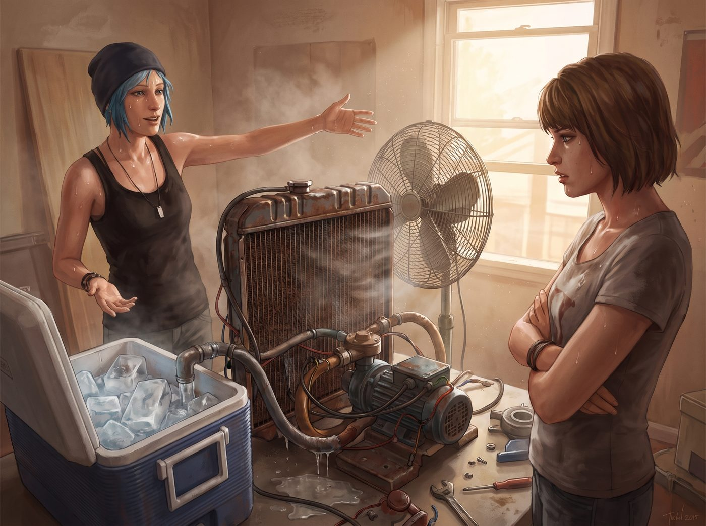

廢土冷氣機與秘密溪流

一、土法制冷渦輪
面對這場席捲全樓的酷暑危機,Chloe 絕不打算坐以待斃。
她翻箱倒櫃地從自己那堆修車家當裡,搜羅出一個廢棄的舊散熱水箱、一台小型水泵,又跑了趟廢品場,扛回半箱工業用冰塊,接上一台老舊電風扇,在房間中央,手工拼裝出一台造型詭異、卻意外管用的「土法制冷渦輪」。
「這玩意真的有用?」Max 一臉懷疑地打量著那堆管線交錯、看起來隨時可能散架的機械組合。
「信不信由妳。」Chloe 得意地一按開關。
機器發出一陣拖拉機般的巨大轟鳴,劇烈震動了幾秒,隨即,一股帶著濕潤水氣的冷風,猛地從出風口噴湧而出。
房間裡的溫度,肉眼可見地驟降了將近十度。
Max 站在風口前,瞇著眼享受這股久違的涼爽,由衷地感嘆:「這噪音大得像拖拉機,但我不得不承認,妳這玩意真的管用。」
二、避難所盛況
消息很快傳遍整棟樓,那間打通的套間,一夕之間成了 Talia Hall 唯一的「涼爽庇護所」。
不到半天,套間門口就排起了小隊——熱到快中暑的女生們,一個個捧著冰棒或濕毛巾,眼巴巴地探頭進來,懇求能借風口前站一會兒。
Chloe 眼珠一轉,忽然靈機一動,在門口支了張紙板,上面歪歪扭扭地寫著:「涼風體驗,一次五毛,VIP包月三塊。」
「Chloe!」Max 一臉不可置信,「妳這是在發國難財!」
「這叫市場經濟,」Chloe振振有詞,已經開始笑瞇瞇地朝排隊的女生們收錢,「供不應求,漲價合理。」
Max 還想上前阻止,卻發現隊伍裡的女生們,早已一個個心甘情願地掏出零錢,乖乖排隊付款,絲毫沒有半點猶豫——比起繼續在悶熱的走廊裡等死,五毛錢換幾分鐘的清涼,顯然划算太多。
排在隊伍後方的 Kate,看著這一幕,忍不住抿嘴偷笑,肩膀微微顫抖,顯然是在拚命憋著不讓自己笑出聲。
Max 無奈地扶額,轉頭看向 Chloe 手裡那疊越攢越厚的零錢,終究還是放棄了阻止的念頭,任由這場「涼風生意」熱火朝天地繼續下去。
Chloe 索性大方地把房門敞開,任由眾人輪流「朝聖」,自己則得意洋洋地窩在渦輪風口最正中央的位置,一邊數著剛收來的零錢,一邊像個君臨天下的土皇帝。
三、冰箱爭奪戰
風倒是解決了,另一個問題卻悄悄浮現。
Max 這幾天心神不寧,惦記著抽屜裡那幾卷還沒沖洗的膠捲——高溫潮濕的環境,對底片保存來說是致命的威脅,稍有不慎,珍貴的影像就可能徹底報廢。
「我得把這些膠捲冰起來。」她翻找著房間裡那台迷你冰箱,結果打開一看,裡面塞得滿滿當當,全是 Chloe 私藏的冰鎮啤酒和汽水,連一格空隙都擠不出來。
「喂,」Max 皺眉,「這裡面能不能挪點地方?」
「妳想幹嘛?」Chloe 湊過來一看,立刻警惕起來,「不會是想把我的啤酒全扔出去吧?」
「我的膠捲比妳的啤酒重要多了,」Max 語氣不容置疑,已經開始動手把幾罐啤酒一一取出,「這些是我拍的重要底片,壞了就再也拍不回來了,妳的啤酒最多就是不冰而已。」
「這是兩碼事!」Chloe 一臉肉痛地看著自己的存貨被一罐罐搬出冰箱,堆到門外的地板上,「這可是我特地藏起來、準備熱死自己都要留著慶祝的救命稻草!」
兩人在冰箱前僵持了幾秒,最終還是 Max 的邏輯佔了上風——一整箱冰鎮啤酒被無情地請出了冰箱,擠到門邊的角落,而那幾卷膠捲,則被小心翼翼地安置進騰出來的冷藏空間。
Chloe 望著自己那堆「無家可歸」的啤酒,幽怨地嘆了口氣。
三之二、按摩與制裁
看著 Chloe 那副被搶走心愛啤酒的委屈模樣,Max 到底還是心軟了,拍拍她的肩膀,示意她坐到椅子上。
「行了行了,」她繞到 Chloe 身後,伸手揉捏著她因為搬運啤酒和拼裝渦輪機而僵硬的肩膀,語氣裡帶著點哄小孩的縱容,「我幫妳按按肩膀,消消氣。」
Chloe 舒服地瞇起眼,喉嚨裡發出一聲滿足的哼聲,任由那雙手在自己肩頸間仔細揉按。舒服了沒幾分鐘,她忽然睜開眼,嘴角勾起一抹熟悉的、不懷好意的笑。
「妳這手藝,」她慢悠悠地開口,語氣裡帶著調戲的意味,「不能只按肩膀吧,老司機都知道,其他地方也很需要『放鬆』一下。」
Max 按摩的手,毫無預警地猛地一用力,精準地掐上她肩頸最痠痛的那個穴位。
「嗷!」Chloe 慘叫一聲,整個人彈起來,「輕點輕點!」
「什麼老司機,」Max 面不改色,手上的力道絲毫不減,語氣裡帶著危險的笑意,「我看妳是欠收拾。」
「投降投降!」Chloe 討饒地連連求饒,肩膀被掐得齜牙咧嘴,卻還是嘴硬地補了一句,「妳這手法,轉行去開推拿館,肯定比我打工賺得多。」
「閉嘴,」Max 沒好氣地又輕輕拍了她後腦勺一下,終於鬆開手,「不老實就沒有下次了。」
Chloe 揉著發紅的肩膀,一臉心有餘悸,卻還是忍不住偷笑,顯然對這場「制裁」毫無悔意。
四、出逃計畫
冰箱之爭以 Max 的完勝告終,但整個房間的悶熱和忙亂,還是讓兩人都覺得有些喘不過氣。
傍晚時分,Chloe 忽然一拍腦門,像是想起什麼絕妙主意,一把抓起皮卡車鑰匙。
「走吧 Maxine,」她拉起還癱在渦輪風口前納涼的 Max,語氣裡帶著蓄謀已久的興奮,「帶條毛巾,我知道個好地方。」
「什麼地方?」
「廢品場後面有條溪流,」Chloe 眼睛發亮,「水質清得很,而且從來沒人知道那個地方——回溯時間也吹不出冷風,但那條溪流絕對能讓妳涼快到骨頭裡。」
Max 猶豫了兩秒,終究還是被那份誘惑打敗,乖乖抓起毛巾跟上。
五、秘密溪流
皮卡顛簸著開過一段荒草叢生的小路,盡頭果然藏著一條清澈見底的小溪,兩岸長滿茂密的樹蔭,溪水潺潺流過鵝卵石,空氣裡瀰漫著青草和溪水的清涼氣息,跟宿舍那股悶熱的暑氣,簡直是兩個世界。
Chloe 二話不說,踢掉鞋子,連衣服都沒顧上脫,直接一個助跑,「噗通」一聲跳進溪水裡,濺起大片水花,冰涼的溪水瞬間浸透她的背心和短褲,貼在身上。
「妳瘋了!」Max 被水花濺了一身,又驚又笑。
「快下來!」Chloe 在水裡甩了甩頭,笑得肆意張揚,朝她招手,「這才叫真正的降溫!」
Max 猶豫片刻,終究還是被那份感染力打動,脫掉鞋襪,踩進沁涼的溪水裡,濕透的衣料瞬間貼緊身體,帶著一種久違的、暢快淋漓的清爽感。
兩人在溪水裡笑鬧著互相潑水,金色的夕陽透過樹蔭灑落,在水面上碎成一片粼粼波光。Chloe 一把撈起 Max,把她整個人抱進懷裡轉了個圈,水花四濺,兩人的笑聲在寂靜的林間迴盪,把那整棟悶熱擁擠的宿舍,連同所有跳閘、爭執和汗水,都暫時拋在了九霄雲外。
「這才是,」Chloe 喘著氣,額頭抵著 Max 濕漉漉的額頭,笑意裡帶著滿足,「屬於我們的避暑聖地。」